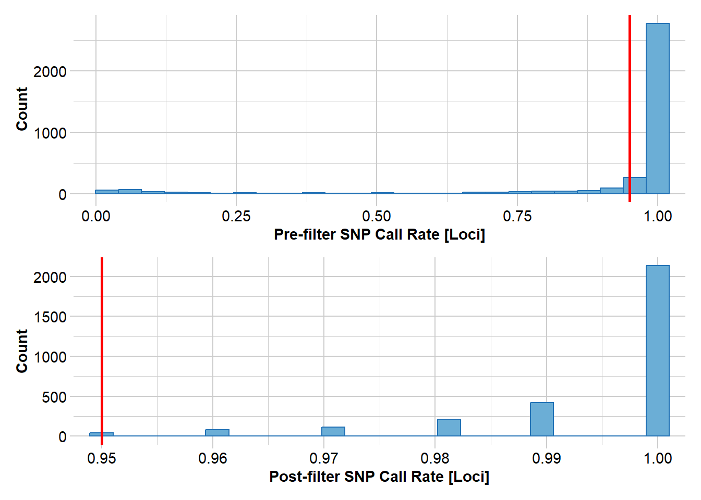
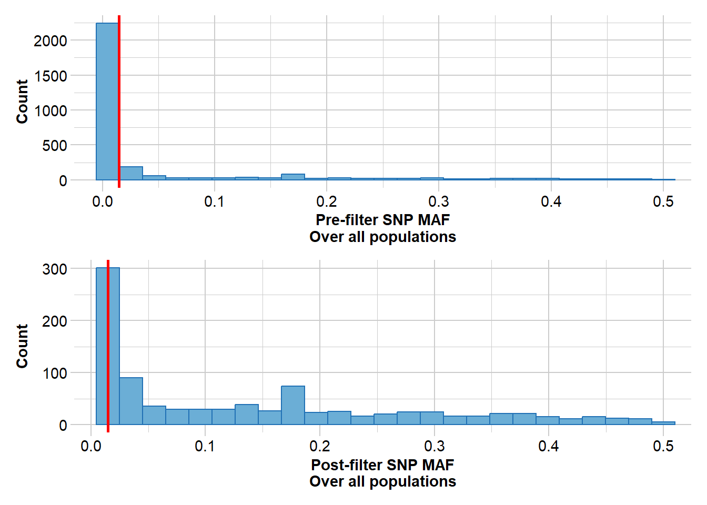
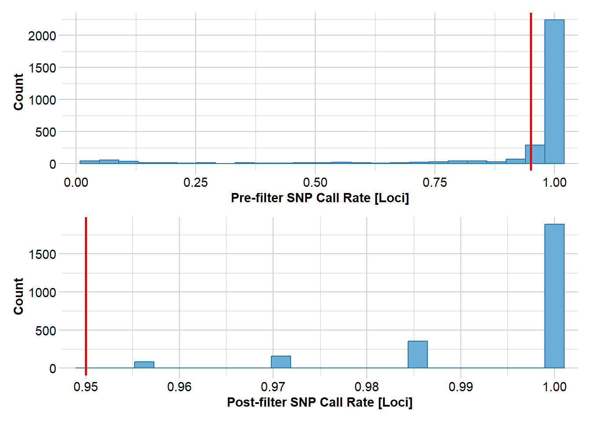

Managing small populations: genetics and conservation
Prerequisites
Small and fragmented populations are one of the most common challenges in conservation biology. Habitat loss and landscape fragmentation frequently interrupt natural gene flow, leaving species divided into small isolated populations. In such populations, evolutionary processes such as genetic drift and inbreeding become dominant forces, often leading to reduced genetic diversity, inbreeding depression, and ultimately increased extinction risk. >>>>>>> main
Modern conservation management therefore increasingly incorporates genetic information to diagnose population fragmentation, evaluate genetic erosion, and design interventions that restore gene flow. One important strategy is genetic rescue, the deliberate increase of gene flow between populations to reduce inbreeding and restore genetic diversity.
In this session we introduce the genetic processes affecting small populations and outline a practical framework used by conservation geneticists to assess whether populations are genetically threatened and when interventions such as assisted gene flow may be appropriate. The tutorial component will demonstrate how genomic data can be used to diagnose fragmentation, estimate genetic diversity, and support management decisions.
Learning outcomes
By the end of this session you should be able to:
explain why small and isolated populations are particularly vulnerable to genetic drift and inbreeding
describe how habitat fragmentation disrupts gene flow
recognise the genetic consequences of small population size, including loss of diversity and inbreeding depression
outline the concept of genetic rescue and when it may be beneficial
interpret basic genetic analyses used to diagnose genetic erosion and population structure
understand how genomic data can support evidence-based conservation management
Session summary
Human-driven habitat fragmentation has created many small and isolated populations across the globe. In these populations, genetic drift increases inbreeding and reduces genetic diversity, limiting adaptive potential and increasing extinction risk.
Conservation genetics provides tools to diagnose these problems and guide management responses. A key approach is genetic rescue, which restores gene flow between populations to alleviate inbreeding depression and increase genetic diversity. Although risks such as outbreeding depression must be considered, evidence shows that genetic rescue is often highly beneficial when populations are small and isolated.
Effective genetic management therefore requires a structured process:
1. Diagnose genetic erosion using genetic diversity, inbreeding, and population structure.
2. Evaluate potential donor populations for increasing gene flow.
3. Assess risks such as outbreeding depression.
4. Implement and monitor genetic management actions.
Genomic data combined with clear decision frameworks allow conservation practitioners to make informed management decisions that increase the long-term viability of threatened populations.
Worked Example
Required packges
library(dartRverse)
***********************************************
**** Welcome to dartRverse [Version 1.2.2] ****
***********************************************
Starting gl.filter.monomorphs
Processing genlight object with SNP data
Warning: data include loci that are scored NA across all individuals.
Consider filtering using gl <- gl.filter.allna(gl)
Identifying monomorphic loci
Removing monomorphic loci and loci with all missing
data
Original No. of loci: 12908
Monomorphic loci: 9228
Loci scored all NA: 744
No. of loci deleted: 9228
No. of loci retained: 3680
No. of individuals: 102
No. of populations: 5
Completed: gl.filter.monomorphs
#filter loci callrate (individuals with low call rates have already been removed)gl <-gl.filter.callrate(gl, method ="loc", threshold=0.95, verbose=3)
Starting gl.filter.callrate
Processing genlight object with SNP data
Recalculating Call Rate
Removing loci based on Call Rate, threshold = 0.95
Summary of filtered dataset
Call Rate for loci > 0.95
Original No. of loci : 3680
Original No. of individuals: 102
No. of loci retained: 3003
No. of individuals retained: 102
No. of populations: 5

Completed: gl.filter.callrate
#to visualise the frequency of rare allelesgl.sfs(gl, singlepop = T)
Starting gl.sfs
Processing genlight object with SNP data
Your data contains missing data, better filter stronger or use gl.impute to fill those gaps meaningful!
#Filter rare alleles, a value of three removes any alleles present in only one or two individualsgl <-gl.filter.maf(gl, threshold =3, v=3)
Starting gl.filter.maf
Processing genlight object with SNP data
Removing loci with MAF < 0.0147058823529412 over all the dataset
and recalculating FreqHoms and FreqHets
Summary of filtered dataset
MAF for loci > 0.01470588
Initial number of loci: 3003
Number of loci deleted: 2073
Final number of loci: 930

Completed: gl.filter.maf
Step 4: Run and export the mixing results, this versions takes the “optimal” individual first, note that ncores may need to be adjusted to the number of cores you have available on your computer, I normally choose N-1
On this Posit Cloud we only have 2 cores, PLEASE DON’T CHANGE THE NUMBER OF CORES
Reduces each population to the n= value with no replacement
gl <-gl.subsample.ind2 (gl, n =14, replace =FALSE)
Starting gl.subsample.ind2
Processing genlight object with SNP data
Warning: data include loci that are scored NA across all individuals.
Consider filtering using gl <- gl.filter.allna(gl)
Warning: The parameter method is deprecated, no longer required Warning: The parameter method is deprecated, no longer required Warning: The parameter method is deprecated, no longer required Warning: The parameter method is deprecated, no longer requiredCompleted: gl.subsample.ind2
gl <-gl.filter.monomorphs(gl, v=3)
Starting gl.filter.monomorphs
Processing genlight object with SNP data
Warning: data include loci that are scored NA across all individuals.
Consider filtering using gl <- gl.filter.allna(gl)
Identifying monomorphic loci
Removing monomorphic loci and loci with all missing
data
Original No. of loci: 12908
Monomorphic loci: 9860
Loci scored all NA: 843
No. of loci deleted: 9860
No. of loci retained: 3048
No. of individuals: 70
No. of populations: 5
Completed: gl.filter.monomorphs
Starting gl.filter.callrate
Processing genlight object with SNP data
Recalculating Call Rate
Removing loci based on Call Rate, threshold = 0.95
Summary of filtered dataset
Call Rate for loci > 0.95
Original No. of loci : 3048
Original No. of individuals: 70
No. of loci retained: 2483
No. of individuals retained: 70
No. of populations: 5

Completed: gl.filter.callrate
gl <-gl.filter.maf(gl, threshold =3, verbose=3)
Starting gl.filter.maf
Processing genlight object with SNP data
Removing loci with MAF < 0.0214285714285714 over all the dataset
and recalculating FreqHoms and FreqHets
Summary of filtered dataset
MAF for loci > 0.02142857
Initial number of loci: 2483
Number of loci deleted: 1701
Final number of loci: 782